In the solution of sparse linear systems, the flop count required by direct methods is generally much higher than that of cost-effective iterative methods, especially in three dimensional problems. However, direct methods are still competitive, as they can reach much higher flop rates. This is possible by the use of supernodes, that is clusters of unknowns that are processed together with cache-efficient dense linear algebra kernels. On the contrary, iterative methods can rarely give the same flops performances as direct methods because they require an indirect memory indexing preventing intensive use of the processor cache. Supernodes have been successfully exploited in the field of incomplete LU preconditioning though with lower flops than in direct methods.
In this work we extend the concept of supernode to Factored Sparse Approximate Inverse (FSAI) preconditioning [2] to reduce the set-up cost and improve the overall solver convergence. The FSAI preconditioner
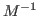
is defined as: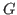
is an approximation of the inverse of the exact lower Cholesky factorStatic FSAI. Suppose that the FSAI non-zero pattern
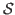
is given and denote by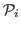
the set of column indices with cardinality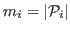
belonging to the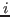
-th row of . Denoting by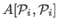
the submatrix of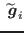
the dense vector collecting the non-zero entries of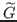
, the following relation holds: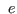
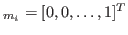
is the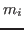
-th vector of the canonical basis of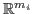
. If two rows, let us say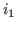
and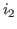
, have a similar pattern, i.e.,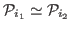
, solving one enlarged system obtained from merging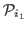
and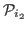
into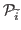
can be less expensive than solving two smaller systems. This pair of rows form a supernode that can be compared to other rows and, if convenient, merged to other sets of indices, thus enlarging the supernode. The collapse of a row into a supernode is decided on the basis of the computational cost for solving (2). Defining a cost model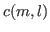
for solving dense systems of size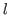
right-hand sides, a supernode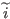
merging and is formed if: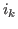
is incorporated into the supernode that has already merged rows if: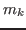
denote the cardinality of the set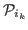
,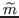
the cardinality of and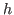
the number of mismatches, that is the number of column indices lying in but not in .Dynamic FSAI. We follow the adaptive approach proposed in [1] for Block FSAI preconditioning and specified as pure FSAI in [2]. The idea is to start from an initial guess, say
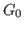
, and improve dynamically the pattern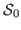
by adding the entries that most reduce the Kaporin condition number of the preconditioned matrix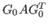
. A new FSAI,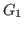
, is thus computed, and the procedure is repeated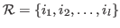
. A supernode is defined if: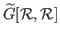
;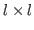
identity matrix,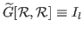
.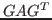
is minimum iff for each supernode satisfy: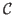
is the set of column indices outside . With a dynamic FSAI supernodes size is user-specified, forcing groups of adjacent rows to merge. For these rows, the entries of are computed by equation (5) where a new column is introduced whenever it allows for a significant decrease of the current value of the Kaporin number of . A score for each column index is computed and the supernode pattern is enlarged until either a maximum number of columns are added or an appropriate exit criterion is met.The Supernodes performance is investigated in both static and dynamic FSAI with a set of numerical experiments. The results show that they are effective in reducing significantly the preconditioner set-up time. Experience indicates that super nodes can improve performance up to 6 times better than the native FSAI.
References:
[1] C. Janna and M. Ferronato, Adaptive pattern research for Block FSAI preconditioners, SIAM Journal on Scientific Computing, 33 (2011), 3357-3380.
[2] C. Janna, M. Ferronato, F. Sartoretto and G. Gambolati, FSAIPACK: a software package for high performance Factored Sparse Approximate Inverse preconditioning, ACM Transactions on Mathematical Software, submitted.